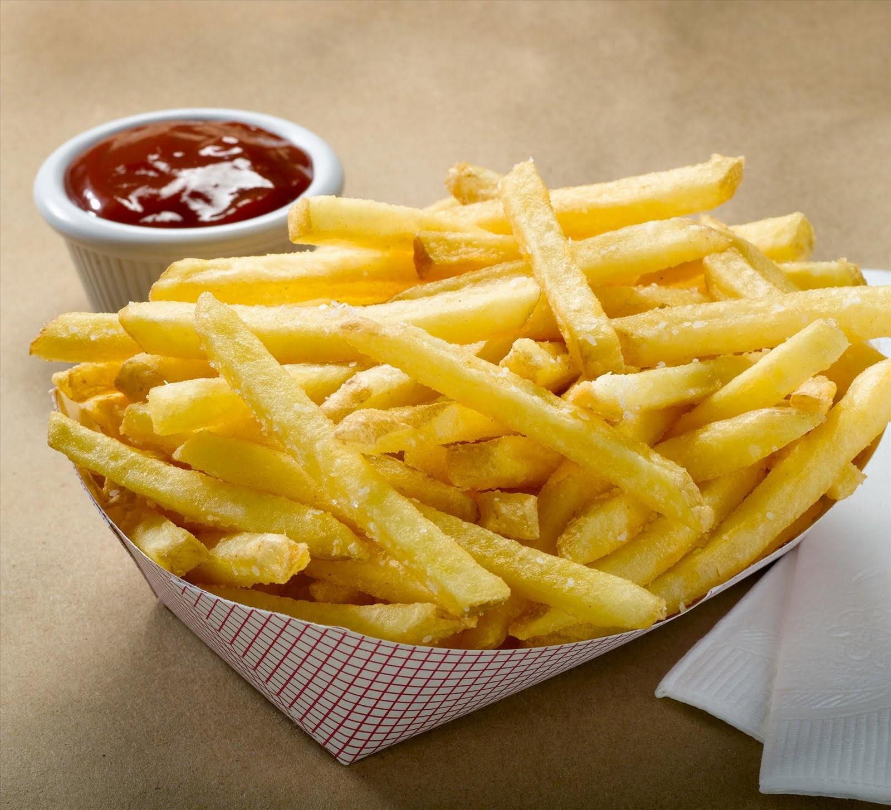

Papas fritas
Receta de papas fritas caseras

Ingredientes
3 o 4 papas (300gr)
Aceite
Sal
Elaboración (Pasos)
Pelar las papas
Cortarlas en bastón
Calentar aceite en una sartén
Cocinar hasta que estén doradas
Removerlas del aceite y salar al gusto